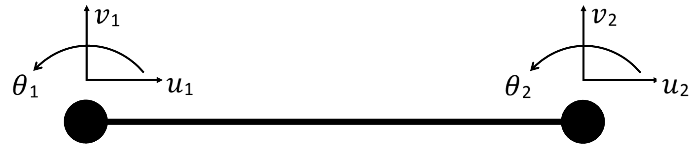
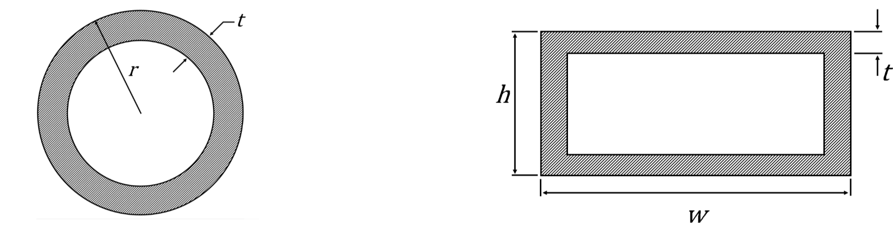
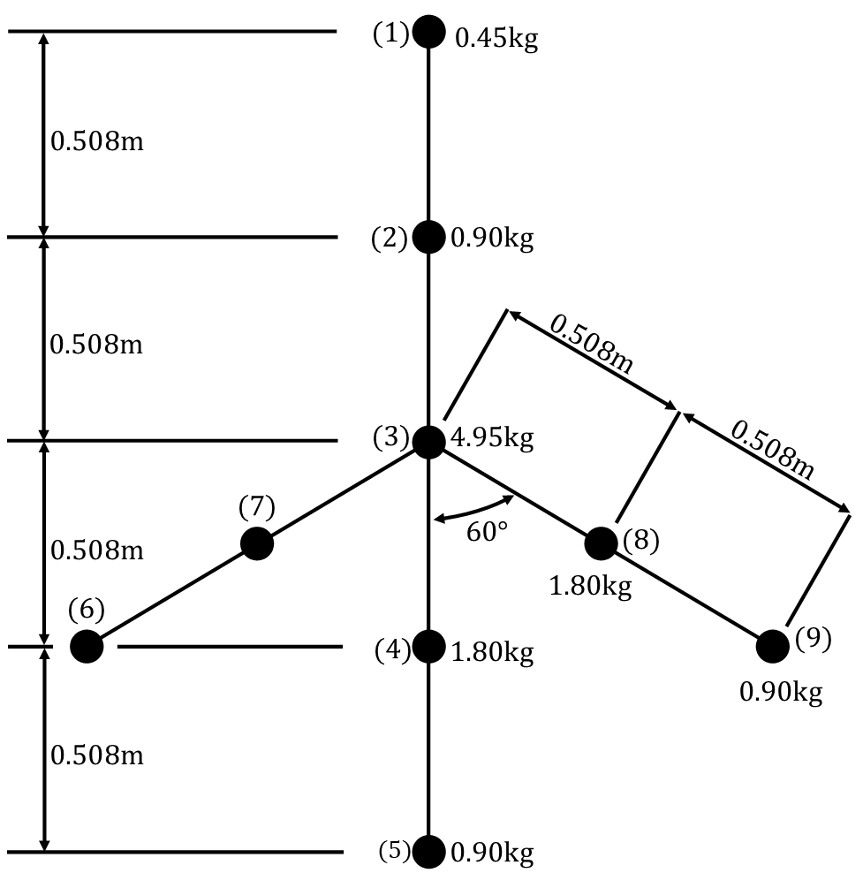

Consider a beam consisting of 2 nodes. Each node has 3 degrees of freedom: an axial displacement $u$, a transverse displacement $v$ and a rotation $\theta$.

Using the beam's internal equilibrium and the principle of variations, the beam's stiffness matrix can be derived and determined. This relates the equivalent applied forces and moments ($\textbf{F}$) at the nodes to the nodal displacements and rotations ($\textbf{u}$). For this model, Euler-Bernoulli (Kirchhoff) beam elements were used. This assumes the beam cross-section remains orthogonal to the beam-axis under deformation. In other words, shear deformation is neglected. For this beam element, the force vector, equal to the stiffness matrix multiplied by the nodal displacement vector, is:
$$ [ \textbf{K} ]^e \{ \textbf{u} \}^e = \begin{bmatrix} \frac{AE}{L} & 0 & 0 & -\frac{AE}{L} & 0 & 0 \\ & \frac{12EI}{L^3} &\frac{6EI}{L^2} & 0 & -\frac{12EI}{L^3} &\frac{6EI}{L^2} \\ & & \frac{4EI}{L} & 0 & -\frac{6EI}{L^2} & \frac{2EI}{L} \\ & & & \frac{AE}{L}& 0 & 0 \\ & \text{Sym.}& & & \frac{12EI}{L^3} &-\frac{6EI}{L^2} \\ & & & & & \frac{4EI}{L } \end{bmatrix} \begin{Bmatrix} u_1\\ v_1\\ \theta_1\\ u_2\\ v_2\\ \theta_2\\ \end{Bmatrix} $$
Similarly, the mass matrix of an element can be determined as
$$ [ \textbf{M}]^e = \frac{\rho AL}{420} \begin{bmatrix} 140 & 0 & 0 & 70 & 0 & 0 \\ & 156 & 22l &0 & 54 & -13L \\ & & 4L^2 & 0 & 13L & -3L^2 \\ & & & 140 & 0 & 0 \\ &\text{Sym.} & & & 156 & -22L \\ & & & & & 4L^2\\ \end{bmatrix} $$
where $E$ is the Young's modulus, $\rho$ is the density, $A$ is the cross-sectional area, $L$ is the element length and $I$ is the second moment of area. For this study the material was aluminium ($E$ = $70 \text{GPa}$, $\rho$ = $2700\text{kgm}^{-3}$). For parameters $A$ and $I$, the cross sections were required, with the fuselage having a pipe profile and the wing having a box profile as bellow

The fuselage was measured to have a radius, $r = 0.03\text{m}$. The wing was assumed to have a linearly varying distribution of height and width.
At the tip, $h_{tip} = 0.015\text{m}$ & $w_{tip} = 0.075\text{m}$, and at the root, $h_{root} = 0.037\text{m}$ & $w_{root} = 0.17\text{m}$.
Due to a closed body, the thickness of the model could not be measured directly. Instead using the known mass, density and outer sections,
a constant thickness for the wing and fuselage was assumed and calculated with $t_{fuselage} = 1.7\text{mm}$ and $t_{wing} = 1.2\text{mm}$. It should also be noted
that the elements along the wing have constant cross-sections, using the element's average cross-section.
To model the 3D aircraft, the 2D beam elements are extended to form 3D spatial beam elements. This includes 6 degrees of freedom at each node, 3 rotations and 3 displacements.
These elements are then transformed such that the element’s local degrees of freedom align with the global degrees of freedom.
The final step is to assemble the elements globally based on the connectivity of each element.

To account for the fact that there are concentrated masses, additional terms are added to the mass matrix. These are added to the degrees of freedom where the concentrated masses are located. Now $\textbf{M}$ and $\textbf{K}$ are known, the free vibrations problem can be solved as follows.
The equation of motion for a structure with n degrees of freedom with no damping and under free vibrations can be written in matrix form as:
$$ \mathbf{M}\ddot{\mathbf{r}}(t)+\mathbf{Kr}(t)=0 $$where $ \mathbf{r}(t)$ is the vector of displacements, $\mathbf{M}$ is the mass matrix, $\mathbf{K}$ is the stiffness matrix and $t$ is time.
We assume the following solution, where $\overline{\varphi}$ is a vector is unknown constant amplitude and $\omega_u$ is a natural frequency of the structure:
$$ \mathbf{r}(t)=\overline{\varphi} \cos \omega_u t$$Calculating the second derivative of the previous equation and replacing in in the equation of motion leads to the eigenvalue problem:
$$ \left( \mathbf{K}-\omega_u^2\mathbf{M} \right) \overline{\varphi}=0 $$Thus, for a non-zero vector $\overline{\varphi}$, the following has to be true:
$$ \det \left| \mathbf{K}-\omega_u^2\mathbf{M} \right| = 0 $$This leads to $n$ solutions for $\omega_u$, the eigenvalues, and $n$ corresponding eigenvectors.
The animation in this visualisation shows precisely these eigenvectors ($\textit{mode shapes}$) vibrating at the relevant natural frequency obtained from the corresponding eigenvalue.
For the purpose of this laboratory, the eigenvectors have been normalised with respect to the maximum component of each vector.
Note that when the number of elements $n$ is of the same or order of magnitude as the mode shape being considered $i$, the error in that mode should be large. You can see how large in the convergence plot.
Additionally, when the aircraft is not being loaded, it can (depending on initial conditions) vibrate in any of the natural modes, or a linear combination thereof
$$
\mathbf{r}(t)=a_1\overline{\varphi}_1 \cos \omega_{1} t + a_2\overline{\varphi}_2 \cos \omega_{2} t +\text{ ...}
$$
where $a_1$ and $a_2$ are scalar constants.
The linear combinations animation in this suite allows you to see a combination of any two modes and further decide on their relative weights.